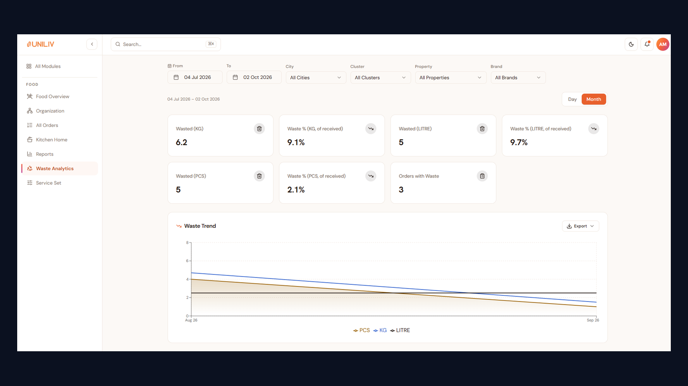

A kitchen cooking blind
A central kitchen in Delhi prepares breakfast, lunch, snacks and dinner for 50 properties and roughly 10,000 residents. Two brands share the same weekly menu rotation. UniLiv serves the fuller set, with two veg dishes, desi ghee chapatti and night milk. Huddle serves a trimmed set of the same dishes.
Before this project, each Unit Lead sent a headcount on WhatsApp by 9 am. The kitchen added the numbers up by hand, cooked a buffer "just in case" and sent food out with no record of what left the kitchen, what arrived at the property or what was thrown away.
Four gaps, one broken chain
- Wrong quantities. Manual counts led to over- and under-production. Kitchen logs showed 18% of cooked food came back or was thrown away, while some properties still ran short.
- No proof of delivery. Nobody recorded what actually arrived, so every shortfall became an argument between the property and the kitchen.
- No consolidated plan. The kitchen had no single view of what to cook across properties, dishes and units.
- No visibility. Cluster, city and zonal heads couldn't see order volumes, status or waste trends at all.
What I learned on site
I spent 3 mornings in the kitchen and visited 4 properties at meal times. I also pulled 8 weeks of dispatch and complaint data, and gathered requirements from every role that touches a meal, from Unit Leads to the F&B Zonal Head.
- Unit Leads padded counts by about 15%, because running short got them blamed and over-ordering didn't.
- About 30% of residents skipped dinner on weekends, but counts didn't change by day.
- The kitchen needed final numbers by 10 am for lunch prep, and wanted totals in kg and litres, not hundreds of property-level gram counts.
- Leadership at each level wanted the same data cut differently: property, cluster, city and zone.
What we considered
| Option | For | Against | Call |
|---|---|---|---|
| Digital headcount form for Unit Leads | Fast to build | Keeps the padded guess; still no proof of delivery | Rejected |
| Resident-level pre-orders in the resident app | Most precise demand signal | Depends on resident adoption; too slow to fix waste this quarter | Later |
| Unit Lead orders by meal type and resident count, with per-resident rules setting dish quantities, plus a tracked lifecycle with proof of delivery and waste capture | Removes free-typed guesses; every step has an owner and a record | Needs accurate master data (dishes, rules, properties) | Chosen |
What we deliberately left out of v1: resident pre-orders, payments, menu ratings and kitchen inventory. They were all requested, but none of them closed the accountability gap in the first quarter.
One lifecycle from order to waste
Every order now moves through the same tracked states, and each step belongs to a named role:
- OrderedUnit Lead
- PreparingF&B Supervisor
- DispatchedF&B · delivery partner
- DeliveredUnit Lead · with proof
- Waste loggedUnit Lead · within 1 hr
- Place Order: the Unit Lead picks a meal type (breakfast, lunch, snacks or dinner) and the resident count. Per-resident rules in Settings turn that into dish quantities, so nobody types a guess. Orders can be edited or cancelled only until dispatch.
- Kitchen Summary: one consolidated prep plan per dish and meal across all open orders, with a property-wise breakdown, a grand total and automatic unit conversion (1,000 g shown as 1 kg, 1,000 ml as 1 litre). The F&B team marks orders Preparing from here.
- Dispatch: cards per property and meal. The team assigns a delivery partner and marks orders Dispatched, one at a time or in bulk.
- Confirm Delivery: the Unit Lead records the item-wise received weight as proof, adds remarks and marks the order Delivered with a timestamp.
- Waste Tracking: received and wasted quantity per dish, editable only within one hour of delivery and capped at the ordered amount, so the numbers can't be adjusted later.
- Dashboard & Reports: KPI cards for total, ordered, dispatched and delivered orders compared with the prior period, plus orders per day, meal mix and resident trends. Leadership can filter by property, cluster, city or zone and download reports.
- Settings: master data for properties, meal-to-dish mapping, per-resident rules, users and delivery partners. One shared catalogue serves both brands, uploadable by CSV, and each brand's service set controls how many items it serves. Deactivating a property keeps its order history.

Nine roles, one permission matrix
Each role sees only what it needs and edits only what it owns.
| Role | What they do |
|---|---|
| Unit Lead | Place orders, confirm delivery with received quantities, record waste |
| Cluster Manager | Monitor and edit orders and deliveries across a cluster of properties |
| City Head · Zonal Head | City and zone oversight of orders and waste, edit all orders, download reports |
| F&B Supervisor · Manager · Zonal Head | Kitchen summary, preparation and dispatch; prep-to-delivery reports |
| Ops Excellence (Admin) | Full access, including Settings and master data |
| Senior Vice President | View-only KPIs and trends |
Pilot first, switch WhatsApp off last
Before go-live, we set up the master data: the shared menu catalogue, meal-to-dish mapping and per-resident rules for each brand. We then piloted at 2 properties for 3 weeks and kept WhatsApp running in parallel so the kitchen had a fallback. Once the kitchen summary matched actual servings within ±5%, we switched WhatsApp off and rolled out city by city.
The hardest part was not the software. Unit Leads had to trust that ordering by resident count wouldn't leave them short. Item-wise proof of delivery helped here: when food was short, the record now showed exactly where in the chain it went missing, so the blame stopped landing on the property by default.
What changed after 90 days
| Metric | Before | After |
|---|---|---|
| Food cooked but not served | 18% | 9% |
| Short / wrong dispatches per week | 14 | 3 |
| Food-related complaints per 100 residents | 6.1 | 2.4 |
| Deliveries confirmed with item-wise received quantity | 0% | 72% |
Measured from kitchen logs, waste tracking, delivery confirmations and the complaint tracker, comparing the 6 weeks before the pilot with weeks 7–12 after full rollout.
Two things I'd do differently
- I underestimated weekend behaviour. The first per-resident rules assumed everyone eats every meal, and Sunday dinners were over-cooked for 2 weeks until Unit Leads entered expected diners instead of total residents.
- I'd involve the kitchen team in writing the acceptance criteria from day one. They spotted the 10 am cut-off and the need for kg and litre totals, both of which I had missed in the first draft of the PRD.